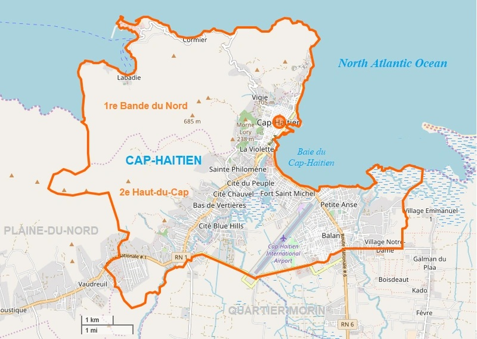

Géographie

Cap-Haïtien est une ville portuaire située sur la côte septentrionale de la République d'Haïti et était considérée au XIXe siècle comme le port le plus sûr de celle-ci. La ville se trouve sur la côte ouest de la baie du Cap-Haïtien, à l'embouchure de la rivière Haut-du-Cap et est dominée par la montagne du Morne Jean qui culmine à 718 mètres d'altitude. À l'ouest de l'agglomération de Cap-Haïtien s'étend en profondeur la baie de l'Acul. Dans les faubourgs de la ville de Cap-Haïtien se trouve la ville de Vertières où se déroula la bataille de Vertières en 1803.
Démographie
La commune est peuplée de 249 541 habitants1(recensement par estimation de 2009), dont 155 505 habitants pour la ville elle-même.
Histoire
C'est à l'est de cette ville, jadis appelée Guarico par les Amérindiens, que Christophe Colomb fait construire un fortin baptisé La Navidad avec les débris de la Santa María, naufragée dans la nuit de Noël de l'année 1492. Il laisse sur place 39 de ses hommes qui, avant le retour de Colomb, sont tous tués par les indigènes excédés par leurs exactions. Le fort, qui avait été incendié, ne sera jamais reconstruit et tombe dans l'oubli, jusqu'à ce que des vestiges soient découverts par un paysan en 1977. Pendant la période coloniale française, la ville, fondée en 1670 par une douzaine d'aventuriers sous le commandement de Pierre Lelong, est connue sous le nom de Cap-Français. La ville est alors la capitale de la colonie de Saint-Domingue avant la Révolution haïtienne. En mai 1695, le Cap est attaqué et pillé par les Anglais, en représailles à l'expédition de la Jamaïque, menée en 1694 par Jean-Baptiste du Casse. En 1739, on édifie le fort Picolet, composé de deux batteries superposées, d'un chemin de ronde et d'une muraille longeant la côte. Tout près ce fort se dressent d'autres fortifications : le fort Magny (dans lequel est enterré le général Magny et défendu par la batterie du Gris-Gris), le Fort Belly, le Fort-aux-Dames et le Fort Saint-Joseph2. La population compte 15 000 habitants en 1790. La ville fut incendiée une première fois du 21 au 23 juin 1793 lors d'un affrontement franco-français entre les troupes républicaines et les séparatistes blancs. Le 5 ou le 6 février 1802, lors du débarquement de l'expédition de Saint-Domingue, le général Henri Christophe, faisant face à la supériorité militaire française par une politique de la terre brûlée, déclenche l'incendie qui détruit la ville en totalité3. L'histoire urbaine de la ville a été étudiée dans un article comparatif avec Jacmel, principale ville du sud du pays4. La bidonvilisation, la pauvreté, l'insécurité et la criminalité restent des phénomènes importants à Cap-Haitien
Administration
La commune est constituée de 3 sections communales :
- Bande du Nord
- Haut du Cap
- Petit Anse (dont le quartier « Petite-Anse »)